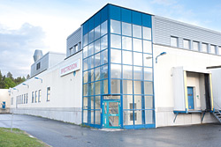

关于我们
Spectrogon的起源部分来自瑞典领先的技术大学皇家理工学院的研究，部分来自瑞典前工业集团AGA AB的研究和开发项目。1980年，我们成为AGA
Optical，最终于1984年成为Spectrogon。Spectrogon AB于1991年6月28日成为独立公司。
Spectrogon已在三个不同的国家建立了运营业务：
Spectrogon AB总部位于瑞典Täby，占地面积为3,600平方米，现有薄膜和光栅产品现代化生产设施，在欧洲，亚洲和澳大利亚拥有70名员工，用于研发，生产，销售和营销。
Spectrogon UK，Ltd。位于英国苏格兰，是一家全资子公司，在英国，爱尔兰，法国，荷兰和比利时雇用三人进行销售和营销。
Spectrogon US，Inc。位于美国新泽西州，是一家全资子公司，雇佣四名员工负责销售和营销美国光电子市场。
Spectrogon的总部Arninge网站Spectrogon的基本业务理念是：“提供具有竞争力的最先进的光学元件和基于干涉和/或衍射的子系统，用于控制光线，主要用于测量应用。”

Spectrogon最重要的市场是西欧和北美。发票销售的主要部分 - 超过80％，用于专业电光市场的原始设备制造商（OEM）。这些专业市场包括：医疗诊断仪器，工业过程控制，机器人，环境测量，光通信和各种其他相关分析仪器。